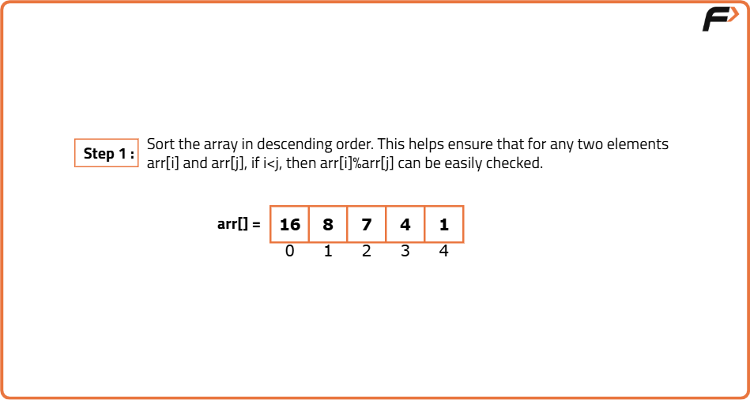
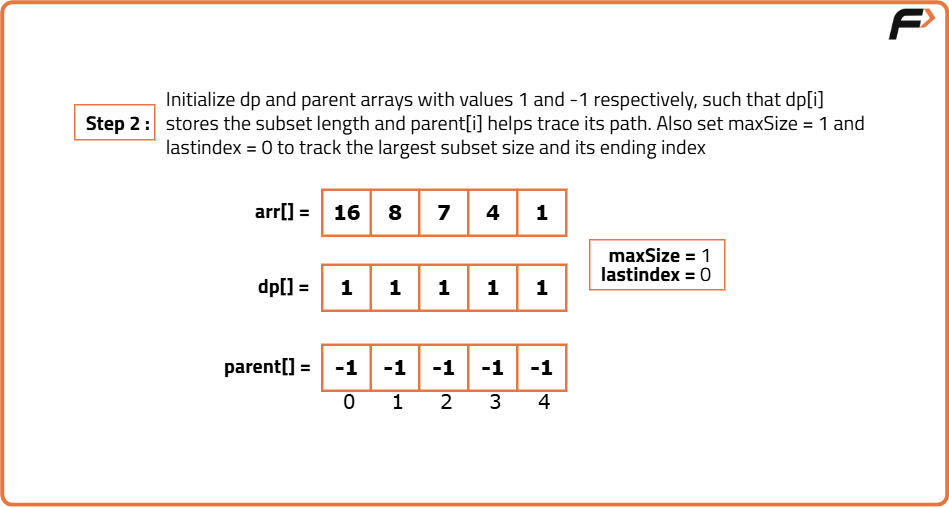
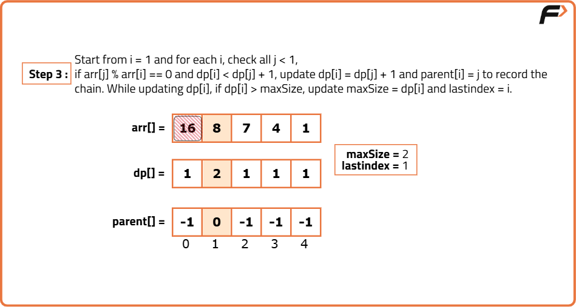
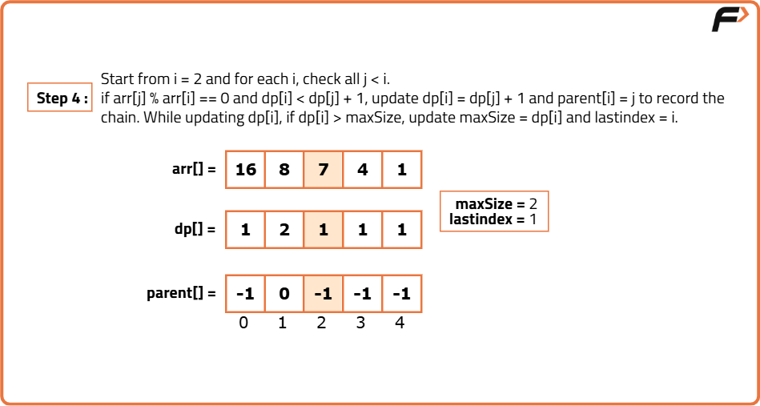
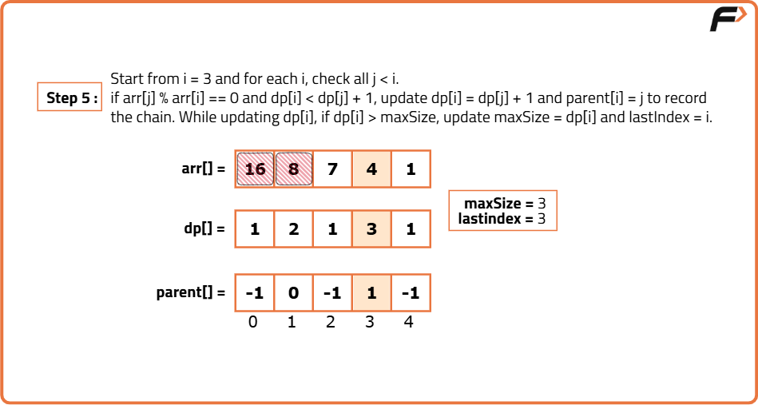
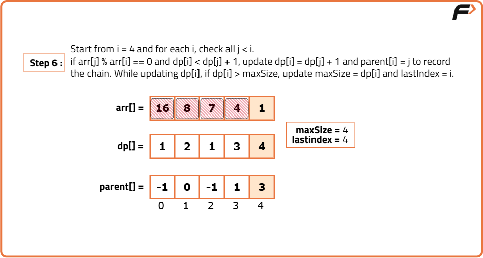
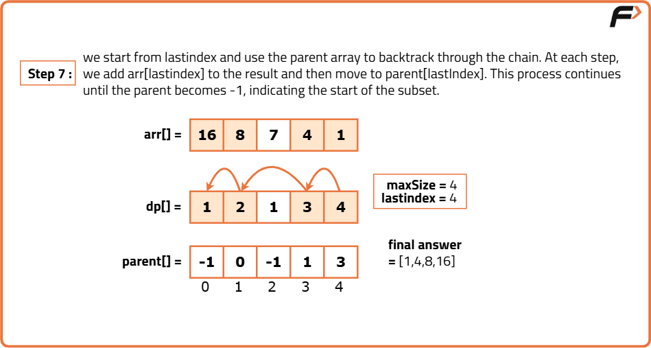

Longest Divisible Subset | (DP-44)
Problem Statement:
Given an array nums of positive integers, the task is to find the largest subset such that every pair (a, b) of elements in the subset satisfies a % b == 0 or b % a == 0.
Return the subset in any order. If there are multiple solutions, return any one of them.
Note: As there can be multiple correct answers, the compiler returns 1 if the answer is valid, else 0.
Examples
Example 1: Input: nums = [3, 5, 10, 20] Output: [5, 10, 20] Explanation: The subset [5, 10, 20] satisfies the divisibility condition: - 10 % 5 == 0 - 20 % 10 == 0 Example 2: Input: nums = [16, 8, 2, 4, 32] Output: [2, 4, 8, 16, 32] Explanation: The entire array forms a divisible subset since: - 32 % 16 == 0 - 16 % 8 == 0 - 8 % 4 == 0 - 4 % 2 == 0
Disclaimer: Here is the practice link to help you assess your knowledge better. It's highly recommend trying to solve it before looking at the solution.
Approach
Algorithm
- Sort the input array in ascending order to transform the problem into finding the longest divisible chain.
- Initialize two arrays:
dp[i]to store the length of the longest divisible subset ending at indexi(initially set to 1), andparent[i]to store the previous element in the optimal subset (initially set toi). - For each element, check all previous elements. If the current element is divisible by a previous element and forms a longer subset, update
dp[i]andparent[i]. - While filling the DP table, keep track of the maximum length and its ending index (
lastIndex). - Backtrack from
lastIndexusing theparentarray until reaching an element whose parent is itself. - The backtracked elements form the longest divisible subset in correct order, which can be returned as the result.







Code
#include <bits/stdc++.h>
using namespace std;
class Solution {
public:
// Function to find the largest divisble subset
vector<int> largestDivisibleSubset(vector<int> nums) {
int n = nums.size(); // Size of the array
sort(nums.begin(), nums.end());
vector<int> ans; // To store the LDS
vector<int> dp(n, 1); // DP array
vector<int> parent(n); // Array to keep record of the parent
// To store the index of last element in the LDS
int lastIndex = 0;
// To store the length of LDS
int maxLen = 0;
// Computing the DP array
for(int i = 0; i < n; i++) {
parent[i] = i; // Assign the parent to itself
// For each previous index
for(int prevInd = 0; prevInd < i; prevInd++) {
// If the element at index i can be included in the LDS ending at index j
if(nums[i] % nums[prevInd] == 0 && dp[i] < dp[prevInd] + 1) {
dp[i] = dp[prevInd] + 1; // Update the DP value
parent[i] = prevInd; // Store the parent
}
}
// If a longer LDS is found, update the values
if(dp[i] > maxLen) {
lastIndex = i;
maxLen = dp[i];
}
}
// Backtracking
int i = lastIndex;
// Until we reach an index which is its own parent
while(parent[i] != i) {
ans.push_back(nums[i]); // Add the element at current index
i = parent[i];
}
ans.push_back(nums[i]); // Adding the last element
// Return the computed result
return ans;
}
};
int main() {
vector<int> nums = {3, 5, 10, 20};
// Creating an object of Solution class
Solution sol;
vector<int> ans = sol.largestDivisibleSubset(nums);
cout << "The largest divisible subset is: ";
for(int x : ans) cout << x << " ";
return 0;
}Complexity Analysis
Time Complexity: O(n^2), where n is the number of elements in the input array. This is due to the nested loops used to fill the DP and parent arrays.
Space Complexity: O(n), where n is the number of elements in the input array. This is due to the storage of the DP and parent arrays.